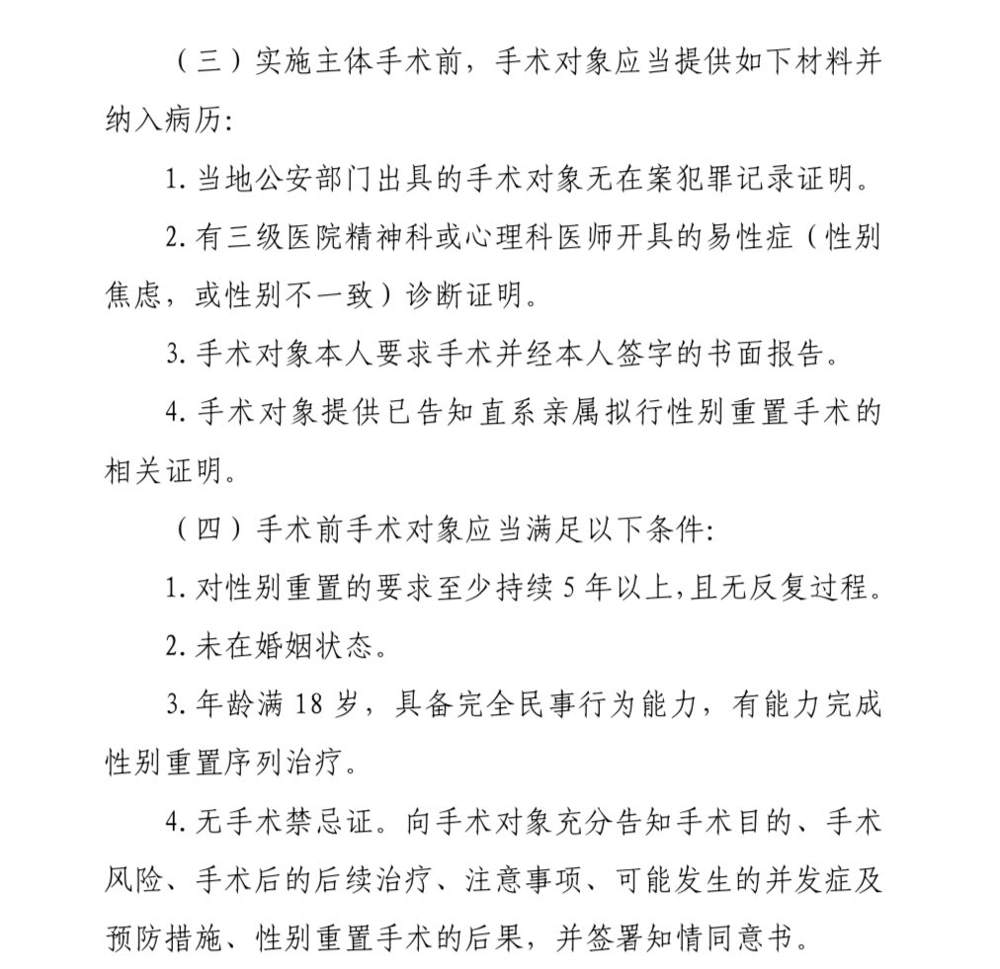

たたなこ🏳️⚧️🍥
@tatanakots
@hagishigure 没办法，国内医院需要遵守国家规定，公立医院至少必须得先合法合规才能开展医疗工作
（图摘自《国家限制类技术临床应用管理规范（2022 年版）》）

時璃風医詩🍥🌈
@hagishigure
材料充滿了違背日內瓦宣言和違背精神醫學去病化運動還有反女權的內容。
全是歧視跨性別者以及患者的要求。
中國。沒救。 https://t.co/2DbyhCvvfT